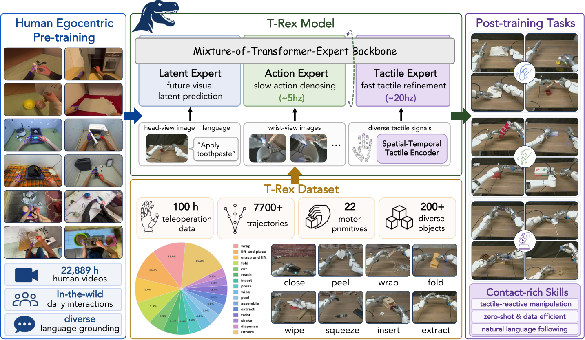
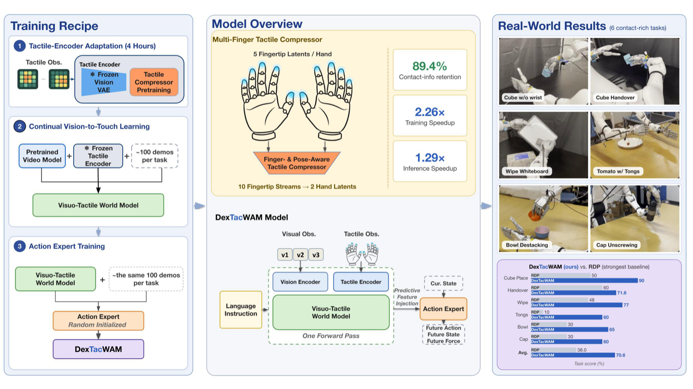
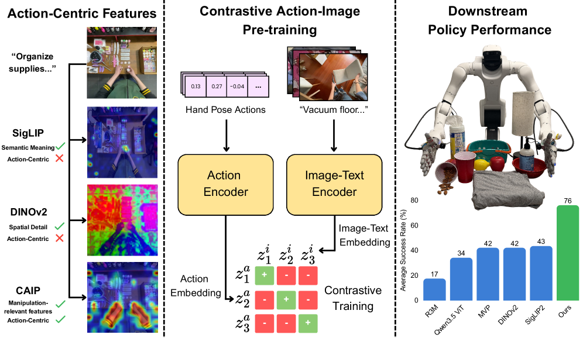
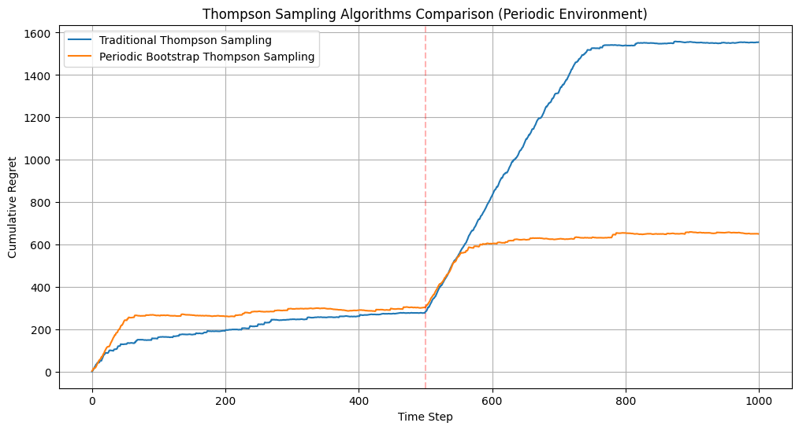

T-Rex: Tactile-Reactive Dexterous Manipulation

Hi! I'm a final-year undergraduate student at The University of Hong Kong, majoring in Applied AI. Previously, I was a visiting student at BAIR at UC Berkeley, advised by Prof. Trevor Darrell. Prior to this, I was a research intern at the Visual AI Lab at The University of Hong Kong, advised by Prof. Kai Han. I'm broadly interested in robot learning and computer vision — currently, how robots can combine visual and tactile perception for dexterous manipulation.
* denotes equal contribution † denotes equal advising



